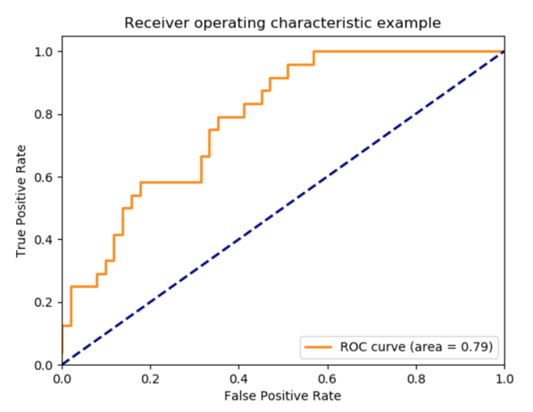

模型评估¶
Classification¶
- Accuracy
\[accuary(y,\widehat{y})=\frac{1}{n_{samples}}\sum_{i=0}^{n_{samples}-1}(\widehat{y}_i=y_i)\]
- Confusion matrix
{kind=link}
- Precision
Precision 表示预测为正样本的样本中，有多少是真的正样本。
\[precision=\frac{TP}{TP+FP}\]
- Recall
Recall 表示所有正样本中，有多少被找出来了。
\[recall=\frac{TP}{TP+FN}\]
- F-measure
\[\begin{split}\begin{align}
F_\beta &= \frac{(1+\beta^2) \cdot precision \cdot recall}{\beta^2 \cdot precision+recall}\\
&= \frac{2 \cdot precision \cdot recall}{precision+recall}\ (if\ \beta = 1)
\end{align}\end{split}\]
- ROC & AUC
ROC : Receiver Operating Characteristic curve
AUC : area under the curve
{kind=link}
\[\begin{split}\begin{align}
FPR(x) &= \frac{FP}{FP+TN}\\
TPR(y) &= \frac{TP}{TP+FN}
\end{align}\end{split}\]
\[\begin{split}\begin{cases}
(x,y)=(1,1) & \mbox{if all predicted = 1}\\
(x,y)=(0,0) & \mbox{if all predicted = 0}\\
(x,y)=(0,1) & \mbox{if perfect predicted}\\
对角线 & \mbox{if random predicted}
\end{cases}\end{split}\]
具体方法:
- 将所有样本的预测值(概率)降序排列;
- 将预测值依次作为阀值，大于阀值的判定为1，反之则为0，得到相应的(FPR,TPR);
- 设样本数量为n，则可以一共可得到n组(FPR,TPR);
- 将n组(FPR,TPR)投影到以FPR为x轴，TPR为y轴的坐标系上，即得ROC曲线。
Regression¶
最常用的就是误差平方和(MSE:mean square error):
\[MSE(y,\widehat{y})=\frac{1}{n_{samples}}\sum_{i=0}^{n_{samples}-1}(\widehat{y}_i-y_i)^2\]
最小二乘法就是最小化该误差的一种方法，即令每个参数的偏导数为0，求解参数。